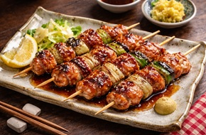
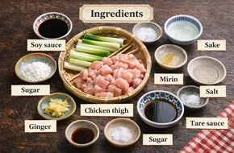

Yakitori
Yakitori is a popular Japanese dish made of grilled chicken skewers. It is seasoned with salt or a savory sauce and cooked over charcoal.

Yakitori is a popular Japanese dish made of grilled chicken skewers. It is seasoned with salt or a savory sauce and cooked over charcoal.
